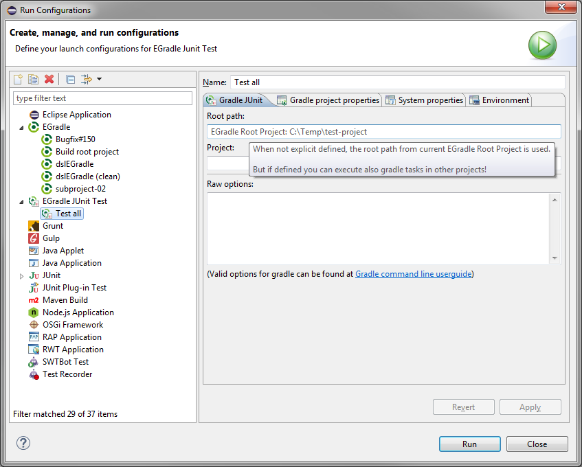
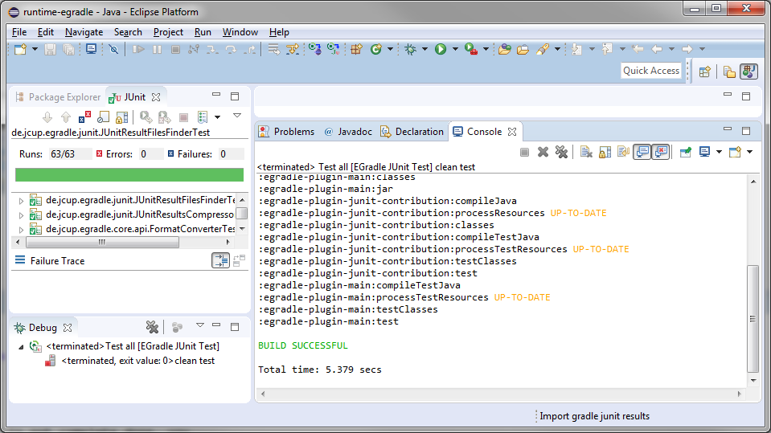
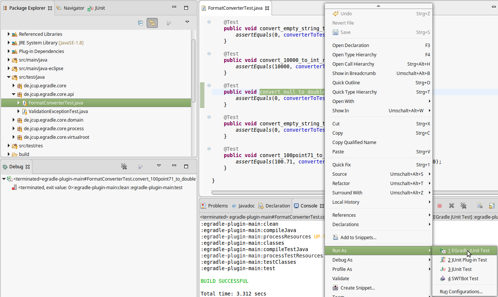

User guide
User guide
JUnit-Integration
Import all existing test results from gradle
EGradle is able to import all junit test result files (XML format) of
current root project into the eclipse junit view by one single click:

Partial import possible
When your gradle build shows test results and is not complete done, you
can always import the current test results without waiting for build to
finish!
So you can work on failed tests without waiting for full build
is done... After full build you can simply import again and have the
full results shown.
Resulting output
Output is as usual:

Launch EGradle Junit Tests
It's the same doing as in when you do a normal
Gradle call, but with a predefined
command setup (clean test) + automatic loading of the junit test
results.
When you enter a gradle project name only the tests for the
given project are executed and shown.

Here you can see an output example

Top
"Run as ... EGradle Junit Test"

The junit results are shown after build.
On a project
When no launch configuration is already created for the project, a new
one will be created All tests inside the project are executed.
On a Junit Test File
When a single Junit Test is selected in Navigator, Package Explorer or
inside a Java-Editor, only this testcase will be executed. If no
configuration exists, it will be created. This is done via the
"--tests" argument which your used gralde installation has to support
(for more information look at
Gradle documentation)
On a Junit Test Method
When you open a Junit Test with an Java Editor set cursor to the test
method (or inside code of test method), open the context menue and
select "Run as ... EGradle Junit Test". This will execute only the
selected test method. If the configuration does not already exist for
the file and the method, it will be created.
Top